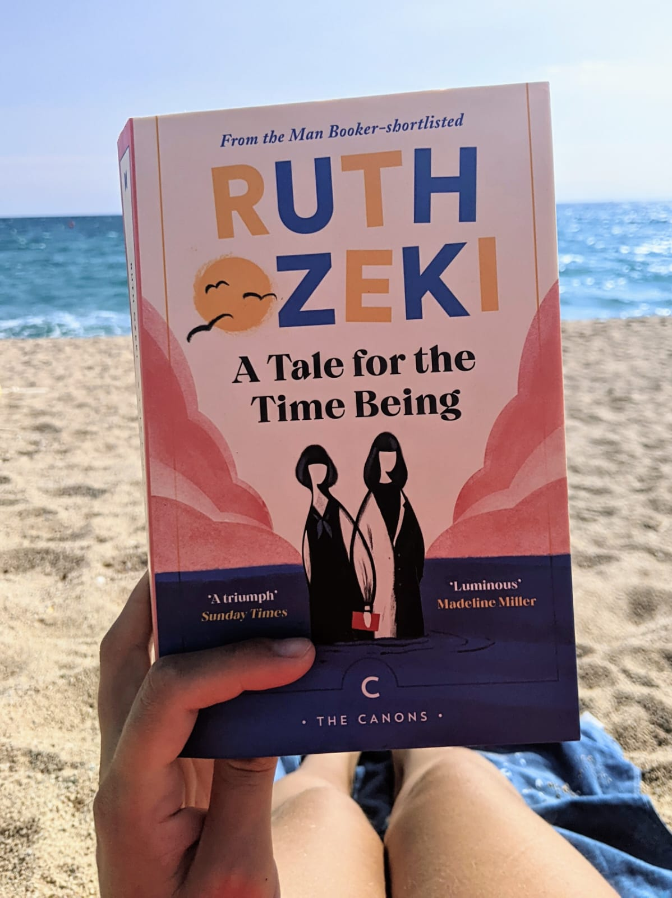
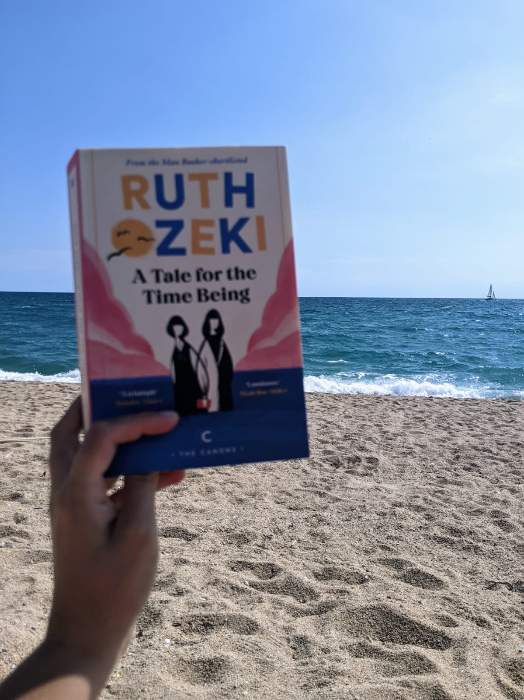
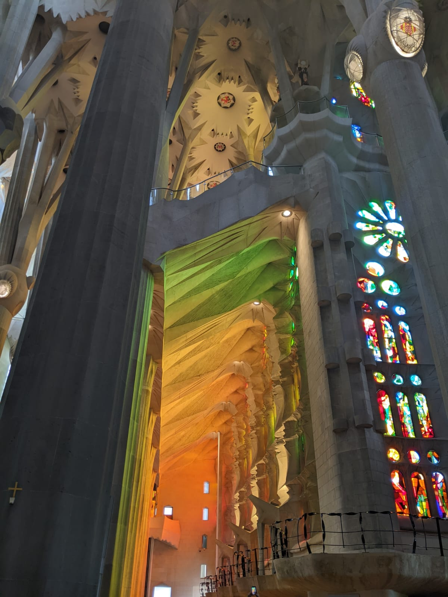

A Tale for the Time Being
by Violet Ruth Ozeki
Time, to me, is an island coastline. The horizon dips and rises, the waves reeling in events sometimes one after another, crashing on to shore, until months feel like weeks and hours turn into minutes. Other times the tide pulls me so quietly and gently forward that momentary joys ebb and linger like the sand over your feet that doesn't want to re-join the ocean.
Perhaps no more evidence of this is needed than me proclaiming A Tale for the Time Being would be the September book of the month, and thinking I was ahead of the curve for having read it early--only to then realise that, what felt like moments later, we were already in mid-October and I had not shared my review as promised.

Ozeki captures these feelings so beautifully. Ruth's lunge-lurch through discovering Nao's story, brought to her as ocean flotsam, plays like these waves of time, and it's hard not to echo the character Muriel's feelings: when you're enveloped in Nao's story the pages turn themselves as you're chasing down resolution for Nao. Ozeki's elegant prose does not bely the ability to convey the thoughts of a teenager--many a novel has turned to reductive prose in order to portray younger characters, much to their own detriment. You need the distinctive, thoughtful, well-written voice Ozeki gives Nao in order to stomach her story--there are very few books where I have been so distraught by what happens to a character that I have needed a break from the story, but more than once I have had to put down Time Being to digest the events, tears in my eyes.

Ruth's perspective is equally fascinating. Of course, there is the very meta nature of Ruth being the academic with writer's block; but more than that, Ruth's deeply introspective nature shines gently through to the reader, ushering the reader into physical and spiritual concepts with ease, so you never feel like you've been lectured. Ruth's trust in her partner gives you a cautious optimism that you need when the trust turns to, at times, misgivings.
There's so much to delve in to with this novel. There are so many themes that are worth exploring: of course, that of time (that beautiful title); but also what memory is, and how it shapes us. Examining what home is: how we lose it, how we can find it again, exploring what Iit means to be an immigrant. What happens to us as we lose the connections that we hold dear. Nature, as a witness to what we humans do, and how it marks that for us--but equally, how we engrain ourselves into nature effortlessly. What it means, what it truly means, to be sending our children in to war, and how carelessly we shake about the concept of peace when we are at peace.
Life is fleeting. Don't waste a single moment of your precious life. Wake up now! And now! And now!
--Ruth Ozeki, A Tale for the Time Being
The light playing inside of the Sagrada Familia, where I couldn't help but ruminate on zazen and the confluence of nature and man after finishing the book the day of. />
I'm not sure I'm ready to give written words to my thoughts about these themes as they pertain to Ozeki; to my understanding of my own notions of home and spirituality, to the human condition; to climate change. I look forward to rereading this beautifully dense, enthralling, deeply compassionate novel--they will come then. Until then I can sense them, on that horizon, dipping sometimes into the sunset, bobbing along until I have the time to examine them deeper, armed with pen and paper.
Read this and enjoyed it?
For more books that touch just ever so lightly on how we connect to a nature that is crumbling around us, and include just a hint of science and/or spirituality:
- Sophie's World by Jostein Gardner: Sophie receives a mysterious letter in the mailbox that changes how she sees the world. As the letter writer introduces her to new and exciting philosophers, the edges of her world start to melt and fray. What will Sophie do, and will she ever find the mysterious letter writer?
- A Children's Bible by Lydia Millet: the flood is coming. Will the rich parents on this beach side vacation wake up long enough from their capitalistic stupors to save their children?
- The Vegetarian by Han Kang: Yeong-hye's dreams have turned bloody and savage. What unfolds, in three acts, when she decides to forgo meat in a society that has embraced savagery.
- Shuggie Bain by Douglas Stuart: the story of a boy and mom, trapped in their own circumstances, in 1980s Scotland, where Tory governments have ravaged and pillaged society. Shuggie and Agnes circle each other, and circle the harsh edges of poverty in this blistering, raw, beautiful story.
- Here on Earth by Alice Hoffman: a modern Wuthering Heights, breathed into life by Alice Hoffman's magical prose.
- The Versions of Us by Laura Barnell: what does the path not taken mean? The love lives of Eva and Jim in all possible universes slowly thumbs away the gilded eges of choice, of what it means to love someone.
- Visitation by Jenny Erpenbeck: a story of time travel, of what it means to live somewhere, call it home, make your mark on land. One house in Germany and the story of it's occupants through the years.
- may we be forgiven by A. M. Homes: one of the most engrossing novels I've ever read. One man's life slowly and steadily unravels as the book goes on, until he's left with only choice and responsibility. A beautifully raw look at generational trauma and the scars it leaves behind.
- If I Had Your Face by Frances Cha: a beautiful, quick-paced novel following the modern lives of four young women in Seoul, navigating through complex patriarchal structures and the harshness of capitalism. What does it mean to survive in these systems? Is it ever possible to thrive, even?
- Ozeki is the first Man Booker prize nominated writer who is also a Zen Buddhist priest. You can find out more about Buddhist beliefs through podcast episodes such as Outrage and Optimism's special of The Way Out Is In. Podcast cohost Christiana Figueres credits her practice with her ability to negotiate the Paris Agreement of 2015. Note other episodes from O&O on this topic: The Way Out Is In: Benefiting From a Spiritual Practice and The Deep Time Walk.
- Let me know what you thought and your analysis, and let’s spark a conversation!
For more atmospheric, all encompassing, multi-layered books that stay with you, long after you close the front cover: